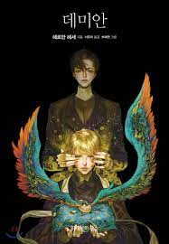

데미안
새는 싱클레어처럼 성장통을 겪고 있는 사람들을 의미하고 알은 그 사람들이 극복해야 할 시련을 의미하며 파괴한다는 말 자체가 극복, 아브락사스에게 나아가는 길 자체는 나락과 구원으로 얼룩진 인생을 의미한다. 그렇게 도달한 선과 악의 신 아브락사스는 역경이 있어야 성장도 있다는 깨달음을 주는 개념이 아닌가 하는 생각을 가져본다.
새는 싱클레어처럼 성장통을 겪고 있는 사람들을 의미하고 알은 그 사람들이 극복해야 할 시련을 의미하며 파괴한다는 말 자체가 극복, 아브락사스에게 나아가는 길 자체는 나락과 구원으로 얼룩진 인생을 의미한다. 그렇게 도달한 선과 악의 신 아브락사스는 역경이 있어야 성장도 있다는 깨달음을 주는 개념이 아닌가 하는 생각을 가져본다.